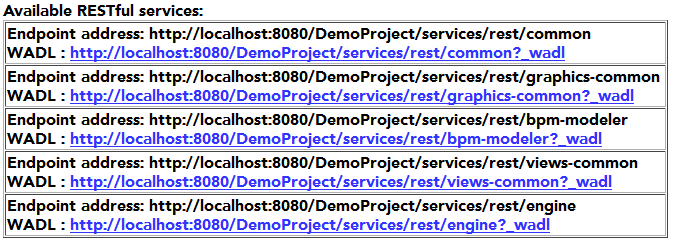

A Web Service endpoint maps the given XML Transfer Objects (XTOs) to the corresponding Java object and delegates to the appropriate service, mapping the result back to an XTO. For example, calling findWorklist(WorklistQueryXto) on org.eclipse.stardust.engine.ws.WorkflowServiceFacade results in a parameter mapping from org.eclipse.stardust.engine.api.ws.query.WorklistQueryXto to org.eclipse.stardust.engine.api.query.WorklistQuery, calling org.eclipse.stardust.engine.api.runtime.WorkflowService#getWorklist(WorklistQuery) and returning an instance of org.eclipse.stardust.engine.api.ws.WorklistXto derived from an object of type org.eclipse.stardust.engine.api.query.Worklist.
The aforementioned Web Service endpoints (including all XTOs) are generated from the four XML documents residing in the ipp-portal/WEB-INF/wsdl folder of your Web application that define the Web Service Contract:
Endpoints provide you with access to the functionality the Stardust Services offer. Each Stardust Service provides three endpoints in order to provide different authentication mechanisms. They can be found under
<hostname>:<port>/<context-root>/services/soap/<endpoint>
Hereby, <hostname>, <port> and <context root> depend on the actual deployment and <endpoint> is one of the following:
For detailed information on the provided service classes, please refer to the next chapter Web Services API.
Assuming Stardust-WS is deployed on the local machine (port 8080 for HTTP, port 8443 for HTTPS) and the context root is ipp, the WorkflowService using HTTP Basic Authentication can be found under
http://localhost:8080/ipp/services/soap/WorkflowServiceHttpBasicAuth
Whereas the QueryService that provides the WS-Security Username Token profile is located under
https://localhost:8443/ipp/services/soap/QueryServiceWssUsernameToken
The following tables shows the paths of the REST endpoint URIs provided by Stardust:
| Project | Plugin-ID | New Path |
|---|---|---|
| views-common | views-common | <resources base="http://localhost:8080/<context-root>/services/rest/views-common"> <resource path="/documentRepoService"></resource> |
| portal-common | common | <resources base="http://localhost:8080/<context-root>/services/rest/common"> <resource path="/properties/{bundleName}/{locale}"></resource> |
| graphics-common | graphics-common | <resources base="http://localhost:8080/<context-root>/services/rest/graphics-common"> <resource path="/documents/{documentId}/pages/{pageNo}/{randomPostfix}"></resource> |
| web-modeler | bpm-modeler | <resources base="http://localhost:8080/<context-root>/services/rest/bpm-modeler"> <resource path="/modeler/{randomPostFix}"></resource> <resource path="/modeler/{randomPostFix}/sessions"></resource> |
| stardust-engine-ws-cxf | engine | <resources base="http://localhost:8080/<context-root>/services/rest/engine"> <resource path="/interactions/{interactionId}"></resource> <resource path="/processes/{processId}"></resource> <resource path="/typeDeclarations/{typeDeclarationId}"></resource> |
Hereby context-root depends on the kind of deployment:
You can check which RESTful services are available via the following URL:
http://localhost:8080/<context-root>/services/rest/
For example for a dynamic Web project named DemoProject the following available endpoint addresses and WADLs are listed:

Figure: Available RESTful services